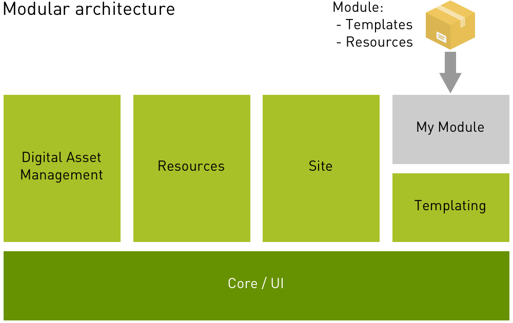

Modules
Magnolia has a modular architecture. A module can perform a task, package content, or provide specialized functionality. Modules can be project specific or they can be reused across different projects. You should use the module mechanism to package and deploy your own site’s configuration and functionality.

Terminology
Magnolia module
In Magnolia documentation, the terms module and project module always refer to a Magnolia module.
What makes a Magnolia module are files specific to Magnolia in a particular folder, see Module structure below. You can add such a Magnolia module folder directly into the webapp of your Magnolia instance.
You can define a Magnolia module with one file, with its Module descriptor. Typically, the descriptor resides either in a Maven module or within a light module together with other files.
Best practice
[.admonition-icon .confluence-information-macro-icon]##
When you are creating a website project, you should have one module for templates, another module for content, a third for a theme and so on.
Maven module
Maven also uses the term module but it means something different. When a Maven module is meant, we write Maven module. You can make the Magnolia module folder part of a Maven module. In that case you would build a JAR file and deploy it to your webapp.
Light module
You don’t need to know Java or Maven to create a perfectly valid Magnolia module. Put your project files into a file-system directory to create a so-called light module. Use YAML-based configuration and Magnolia’s unified resource loading.
This enables light development, a development style which does not require Java skills or a Java development environment. It’s a straightforward way to get started with Magnolia development and works well for front-end developers. The Hello Magnolia tutorial uses light development to create a fully-functional template module.
[.admonition-icon .confluence-information-macro-icon]##
It is best practice to store your light modules outside of the apache-tomcat directory so that the modules you add can be accessed by any Magnolia instance. If you already have a light modules directory you want to use, edit the magnolia.resources.dir property in your magnolia.properties file to point to it.
Module structure
| Magnolia module wrapped in a typical Maven module structure before it is built. |
File-based Magnolia module under
$magnolia.resources.dir = Light module |
|---|---|
` ├── pom.xml` ` └── src/` ` └── main/` ` ├── java/` ` └── resources/` ` ├── META-INF/` ` │ └── magnolia/` ` │ └── module-name.xml` ` └── <module-name>/` ` ├── apps/` ` ├── config.yaml` ` ├── dialogs/` ` │ └── myDialog.yaml` ` ├── webresources/` ` └── templates/` ` ├── components/` ` │ ├── myComponent.ftl` ` │ └── myComponent.yaml` ` └── pages/` ` ├── myTemplate.ftl` ` └── myTemplate.yaml` |
` ` ` ` ` ` ` ` ` ` ` `
` ├── apps/` ` ├── dialogs/` ` │ └── myDialog.yaml` ` ├── module.yaml` ` ├── webresources/` ` └── templates/` ` ├── components/` ` │ ├── myComponent.ftl` ` │ └── myComponent.yaml` ` └── pages/` ` ├── myTemplate.ftl` ` └── myTemplate.yaml` |
These two folder trees show typical folder structures rather than structures with all folders possible.
Folders
|
optional Configuration data for apps (YAML files) |
|
optional Definition decorator files (YAML files), see Definition decoration. Contains subfolders. |
|
optional Dialogs (YAML files), may contain subfolders. |
|
optional Fieldtype definitions (YAML files) for the Magnolia 5 UI framework. |
|
optional i18n message bundle (.properties files). |
|
optional MessageView definitions (YAML files). |
|
optional Renderer definitions. |
|
optional All the web resources, typically contains subfolders. (Folder name is arbitrary.) |
|
optional Template definitions (YAML files) and scripts with subfolders. |
|
optional REST endpoint definitions (YAML files), with subfolders. |
|
optional Virtual URI mapping definitions (YAML files) to redirect incoming requests to the actual content locations. |
Refer to Module structure for further information.
Using Maven and adding Java classes?
If you are familiar with Java and Maven, you may use Maven to create and build your Magnolia module.
There is no requirement to use Java classes within a Magnolia module but
it is possible and offers many advantages. If you want to use Java
classes, we recommend that you wrap your Magnolia module into a Maven
module and add the classes to src/main/java.
Module configuration
If you are using Java and a module class, the class can have bean
properties which can be loaded at module startup with values from
configuration data. The configuration data is stored in a YAML file at
src/main/resources/<module-name>/config.yaml or in the JCR
configuration workspace under the /modules/<module-name>/config
node. For further information, see Module
configuration.
Definition items
Magnolia modules can define a number of items as parts of the module, for example, apps, commands, dialogs, fields, message views, renderers, templates, traits and virtual URI mappings. See Module definition items for further information.
Module descriptor
Module descriptor is a Magnolia-specific file that identifies and defines a module. When you start Magnolia, the system identifies available modules by locating each module’s descriptor file.
In Magnolia Maven modules
Magnolia Maven-based modules must provide a module descriptor. It is
located at src/main/resources/META-INF/magnolia/<module-name>.xml. See
XML-based module descriptor.
In light modules
In a Magnolia file-based module (light module), the descriptor is
located at $magnolia.resources.dir/example-light-module/module.yaml.
See YAML-based module
descriptor.
[.admonition-icon .confluence-information-macro-icon]##
For Magnolia light modules, module descriptors currently support module dependencies only.
Credits:
-
Pixel Buddha: Box icon in modular architecture diagram. Creative Commons Attribution 3.0 Unported (CC BY 3.0)
List of modules